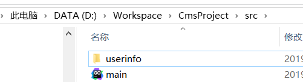

3：创建不同级目录
在上一小节中，将不同的go源代码文件都放在了同一个目录下面，如果将go源代码文件放在不同的目录下面应该怎样进行处理呢？
具体的步骤如下：
（3.1）新建项目目录，如下图所示
在“CmsProject”目录下面，创建src目录，在src目录下面创建如下文件目录与文件.

main.go 定义的是入口函数main( ).
userinfo 文件夹下定义的是user.go文件。
user.go 文件中的代码如下：
package userinfo //不同目录 包名不一样
import "fmt"
func Add(){
fmt.Println("添加用户信息")
}
main.go 文件中的代码如下：
package main
import "fmt"
import "userinfo" //注意导包
func main(){
fmt.Println("main")
userinfo.Add() //通过包名.函数进行调用
}
通过以上两个文件中的代码，可以总结出如下几点:
第一：不同目录，包名不一致（自定义包）。
第二：main.go中调用user.go中的方法时，一定要导包，并且调用的方式是：包名.函数名 的方式
（3.2）要想运行以上代码，还需要设置GOPATH环境变量的值，这样设置比较麻烦，可以通过以下方法进行快速设置：
会打开如下的窗口，然后进行设置。
（3.3）注意：user.go文件中的函数名首字母必须大写，如果改成小写在main.go中无法进行调用
这种不同级目录应用，在以后的项目开发中使用频率非常高。例如：上面我们的案例中，可以将用户管理的操作放在userinfo目录下，商品管理模块可以再定义一个目录,例如:product.如下图所示：
product.go中的代码如下：

main.go中的代码如下：
（3.4）关于包的问题
在第一天的课程中，我们已经讲解了关于包的概念，包就是一个标识，标志着代码是来自哪儿，对代码进行管理。
所以，在main( )函数中要使用相应的函数，必须进行导包，然后根据包名去调用相应的函数。
通过上面的代码，我们也能够体会出“包”的优势，就是可以在userinfo包中定义名叫Add( )方法，在product包中也可以定义Add( )方法，但是在main( )函数中进行调用时，通过包名进行调用，就可以很清楚Add( )方法来自哪个包，不会造成混乱，和名称的冲突。并且相关的功能代码，放在一个包中，可以很好的被复用。例如：可以在userinfo包中使用product,如下图所示：
但是我们创建的的自定义包最好放在GOPATH的src目录下，在Go语言中，代码包中的源码文件名可以是任意的。但是，这些任意名称的源码文件都必须以包声明语句作为文件中的第一行，每个包都对应一个独立的名字空间。
包中成员以名称⾸字母⼤⼩写决定访问权限：
- public: 首字母大写，可以被包外访问
- private: 首字母小写，仅可以被包内访问
注意：同一个目录下不能定义不同的package。
（3.5）导包的问题
在上面的案例中，要使用包，必须要进行导入，可以通过关键字进行import进行导入，它会告诉编译器你想引用该包内的代码。
如果导入的是标准库中的包（GO语言自带，例如:”fmt”包）会在安装 Go 的位置找到。 Go 开发者创建的包会在 GOPATH 环境变量指定的目录里查找。所以，import关键字的作用就是查找包所在的位置。
如果编译器查遍 GOPATH 也没有找到要导入的包，那么在试图对程序执行 run 或者 build
的时候就会出错。
注意：如果导入包之后，未调用其中的函数或者类型将会报出编译错误。
我们常规的导包方式是用import关键子一个个导入。(Goland会自动帮我们导入包)
例如：
表示导入三个包，有GO语言自带的包，也有我们自定义的包。但是，这种写法可能比较麻烦，所以为了简化也可以采用如下的方式进行导包：
这种方式，使用的频率是非常高的。